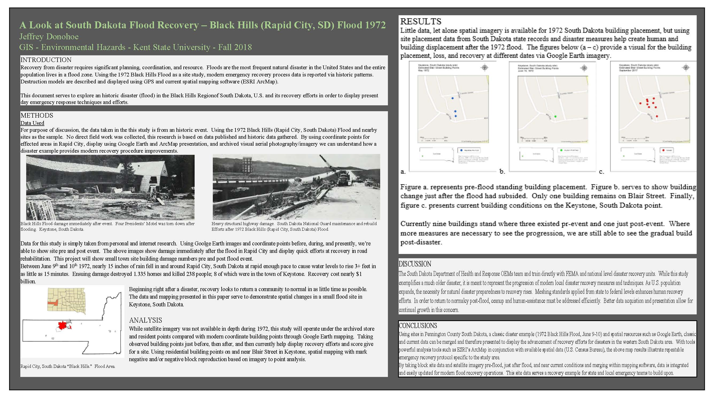
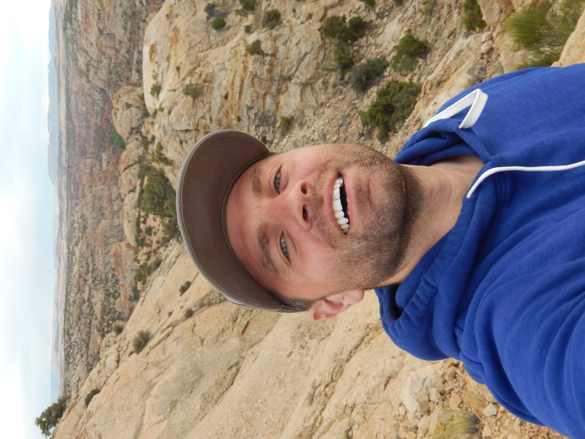
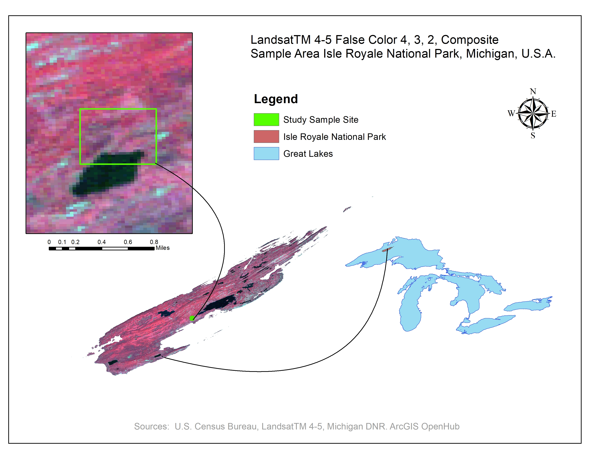
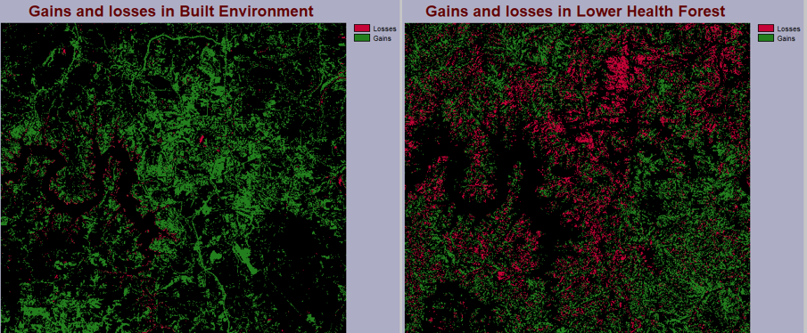
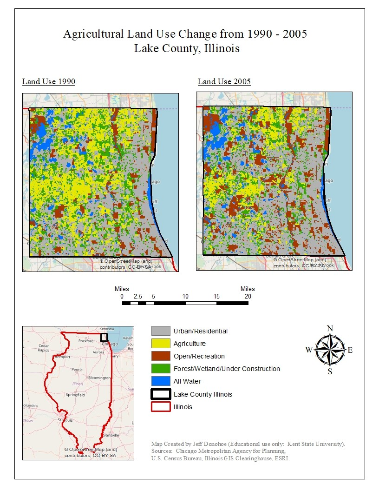

PROJECT 01South Dakota Flood Recovery
GIS work focused on recovery mapping and spatial analysis related to flood impacts. The project highlights data organization, visual communication, and real-world problem-solving.
GIS • Conservation • Systems
IT systems leader and GIS professional building practical, conservation-minded work around wildlife, landscapes, and wild places.

In the field — connecting outdoors, wildlife, and GIS.
I hold a Master’s in Geographic Information Systems from Kent State University and bring more than 15 years of experience in IT systems leadership, infrastructure, project delivery, and technical operations in higher-education nonprofit and government settings.
I am building on that technical foundation through GIS, cartography, conservation mapping, wildlife observation, land-cover change, and field-based data collection. My goal is to apply practical systems thinking and geospatial skills to work that helps people better understand, manage, and protect natural places.
This portfolio briefly describes my professional experience, my graduate GIS research and work, and also my current personal geospataial and mapping projects.
My background combines IT systems leadership, infrastructure, automation, project management, and graduate-level GIS work.
A downloadable resume will be added here as the portfolio develops.
Download ResumeA selection of graduate, personal, and applied GIS projects. Maps, posters, papers, StoryMaps, and project repositories will be connected here as they are prepared.

PROJECT 01GIS work focused on recovery mapping and spatial analysis related to flood impacts. The project highlights data organization, visual communication, and real-world problem-solving.

PROJECT 02Graduate work examining habitat suitability and landscape change for moose in Isle Royale. This project connects ecological questions, spatial analysis, and conservation GIS.

PROJECT 03Remote-sensing project analyzing forest-cover loss over time using Landsat 4-5 TM imagery. It demonstrates experience with land-cover change detection and environmental monitoring using RGB band composites.
Current field-based project using GPS waypoints to document animal sightings and related observations along Lake County Forest Preserve District trails.

PROJECT 05Land-use and land-cover analysis highlighting agricultural change patterns across Lake County, Illinois. This project demonstrates long-term spatial change analysis and cartographic presentation.
Additional papers, posters, maps, and analyses from my Master’s program will be organized here as they are reviewed and prepared for publication.
Work that connects GIS, field observation, widllife conservation, and practical stewardship of natural places. I enjoy documenting landscapes and species observations, working with GPS and spatial data, and asking how environmental change can be made more visible and understandable through maps.
As I continue my transition toward environmental and conservation -focused work, I am building experience through portfolio projects that combine cartography, land-cover change, habitat questions, field data collection, and reliable data-management practices. I am especally drawn to roles that balance technical analysis with time outdoors, collaboration, and meaningful conservation outcomes.
I’m continuing to build this portfolio and welcome conversations about GIS, conservation technology, wildlife mapping, IT systems, and related opportunities.